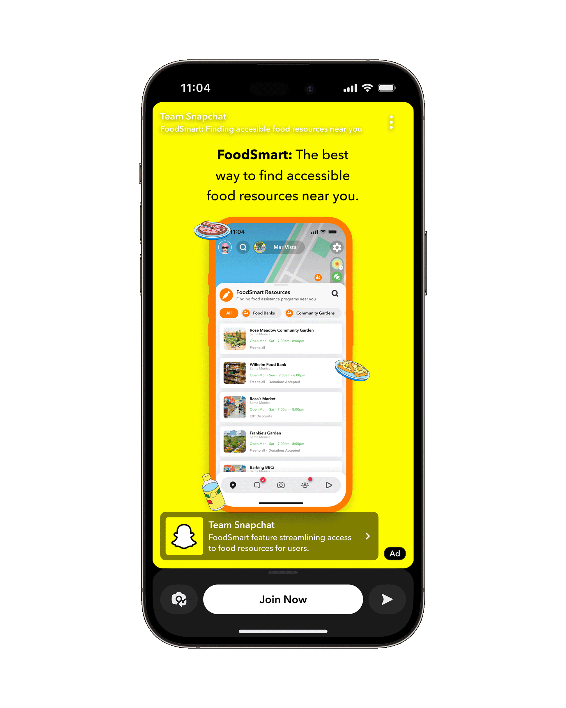
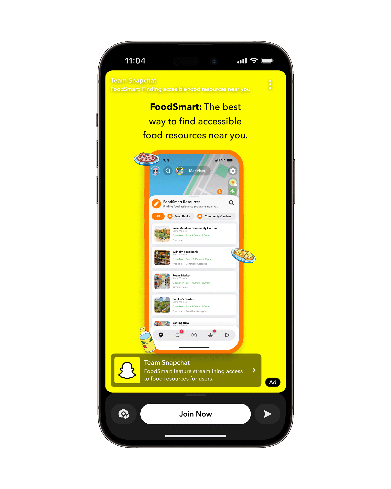

At the start of this project my team and I were tasked with developing a new feature for Snapchat aimed at tackling issues related to food security.
To challenge this, our team created FoodSmart - a Snapchat feature that improves food resource discoverability and access.
As a product designer, I worked cross-functionally to develop seamless in-app tools and a supportive community.
See the full case study here.
 
